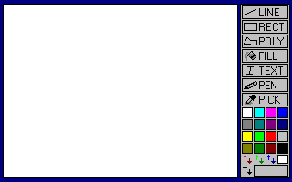
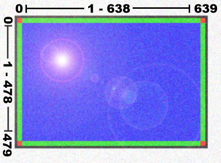

320x200x256 was nice. You needed a palette, so that was kind of icky. If you ever opened up one of the .bmp files from MP4 in a windows image editor, you saw how small they really were:

You want cool graphics, these days you use a high resolution, full color mode. That's what this section is all about. There is a good introduction to this stuff at http://www.osha.igs.net/~dandelong/nw/index.htm under PC Graphics / SVGA. He's got stuff on Bresenham's Algorithm too! Spend at least ten minutes looking over this. Of course you won't look over it unless I ask you a Question 12: How would you set the Set VESA Video Mode to 1024*768*24bit color so that we could access the screen using a linear array? Give me numbers! Here's a table he has with the "24bit" modes labeled as 32bit modes because that's how much memory each pixel actually takes. These modes are also in bold because these are the modes that Pete's Library handles.
| VBE SVGA Video Modes | |||||
|---|---|---|---|---|---|
| Mode# | Resolution | BPP | # of Colors | Bit Reservation | Memory required |
| Palette Indexing Modes | |||||
| 0x100 | 640x400 | 8 | 256 | (N/A) | 250k |
| 0x101 | 640x480 | 8 | 256 | (N/A) | 300k |
| 0x102 | 800x600 | 4 | 16 | (N/A) | 235k |
| 0x103 | 800x600 | 8 | 256 | (N/A) | 469k |
| 0x104 | 1024x768 | 4 | 16 | (N/A) | 384k |
| 0x105 | 1024x768 | 8 | 256 | (N/A) | 768k |
| 0x106 | 1280x1024 | 4 | 16 | (N/A) | 640k |
| 0x107 | 1280x1024 | 8 | 256 | (N/A) | 1,280k |
| Direct-Color Modes | |||||
| 0x10D | 320x200 | 15 | 32k | 1:5:5:5 | 125k |
| 0x10E | 320x200 | 16 | 64k | 5:6:5 | 125k |
| 0x10F | 320x200 | 32 | 16.8M | x:8:8:8 | 188k |
| 0x110 | 640x480 | 15 | 32k | 1:5:5:5 | 600k |
| 0x111 | 640x480 | 16 | 64k | 5:6:5 | 600k |
| 0x112 | 640x480 | 32 | 16.8M | x:8:8:8 | 900k |
| 0x113 | 800x600 | 15 | 32k | 1:5:5:5 | 992k |
| 0x114 | 800x600 | 16 | 64k | 5:6:5 | 992k |
| 0x115 | 800x600 | 32 | 16.8M | x:8:8:8 | 1,488k |
| 0x116 | 1024x768 | 15 | 32k | 1:5:5:5 | 1,536k |
| 0x117 | 1024x768 | 16 | 64k | 5:6:5 | 1,536k |
| 0x118 | 1024x768 | 32 | 16.8M | x:8:8:8 | 2,304k |
| 0x119 | 1280x1024 | 15 | 32k | 1:5:5:5 | 2,560k |
| 0x11A | 1280x1024 | 16 | 64k | 5:6:5 | 2,560k |
| 0x11B | 1280x1024 | 32 | 16.8M | x:8:8:8 | 3,840k |
When you get into a mode, VESA does all sorts of complicated stuff to get you a linear chunk of memory that represents the screen. The goal is to get a big linear piece of memory that you can access just like you accessed segment 0A000h in mode 13h. The VESA bios creates a new selector for this memory and Pete's SetVESA code returns this selector in ES. To access the linear chunk of screen memory, just write to offsets in this selector just like you did for 320x200's 0A000h segment.
Remember your little Endian!
These two are the same even though they might look opposite....
| mov eax, xx_RR_GG_BBh mov dword [gs:4*edx], eax |
mov byte [gs:4*edx+0], BBh mov byte [gs:4*edx+1], GGh mov byte [gs:4*edx+2], RRh mov byte [gs:4*edx+3], xxh |
Task 15: Write Pixels in VESA Mode
For each routine you call, look at the library source code to see what it's doing.
If you're loading the huge, full color BMPs off the network drive on lab machines, they will take a LONG time to come up. Give it at least a full minute before you reboot. :-)
Look at how myloader.asm's _main allocated space for it's double buffer, pointed to by VideoBlock.To do this, Pete calls AllocMem which returns a handle to a piece of memory. Like a file handle, it's value is really pretty meaningless to anyone but the library because it's an index into his own table. Look at dpmi_mem.asm under the code for AllocMem .
Question 13: What interrupt and subfunction does AllocMem call to actually allocate the memory? Look them up in the DPMI Functions by Functional Group and write down names. What does the description of this interrupt say about DPMI hosts that support virtual memory?
Then he calls LockMem which does what's necessary to set up a selector that you can use to access your memory.
Question 14: What interrupts and subfunctions does LockMem call? There are quite a few here.
Would you ever AllocMem without LockMem? No. Why are these separate? It has to do with the LDTs and the information Pete stores in his local tables (index into through handles.). AllocMem only allocates a buffer -- it does not allow you to access it. To do this, you need to set up a descriptor in the Local Descriptor Table that describes this memory. Once this descriptor is in the LDT, its index into the table is the selector of that descriptor. To access the memory, you put this selector in a selector register and offset from this selector.
At the end, he calls UnlockMem and FreeMem with the handles to reverse the process.
Use this method to allocate a blur_buffer in _mymain. Make it WINDOW_W by WINDOW_H pixels big. (How many bytes big is this?) The allocation and locking should happen in the beginning, and the unlocking and freeing should happen when you hit ESC to quit. We need this buffer because the blur algorithm cannot really be done "in place." We want to blur the double buffer into this blur_buffer pixel by pixel and then copy it back. Your KeyJumpTable's Image Blur handler:
Write a memcpy32(dest_seg, dest_offset, source_seg, source_offset, length_in_bytes)
Write blur(dest_seg, dest_offset, source_seg, source_offset, width, height)
The pixels on the edges and corners need to be treated differently because there are not pixels on every side to average with. Pictures are good:

If you go the "brute force" method, the blur code will be quite long. You will have a lot of different cases to go all the way around, and calculate a lot of different averages: You have to look at nine pixels per location. You have to look at three colors per pixel. There's nothing stopping you from using your knowledge of assembly (doesn't matter if that knowledge came from 16-bit) to make the code shorter. Tables are usually helpful. You can make a "screen offset to add to center offset" table like so:
| -width - 1 | -width | -width + 1 |
| -1 | 0 | +1 |
| +width - 1 | + width | +width +1 |
When looking at a pixel in the center, you want to take a weighted average that "adds up to one" otherwise your image would get brighter or dimmer instead of just blurring. We'd also like to have fractions of two so we can divide by shifting. Good weights for the pixels around the center are:
| 1/16 | 1/8 | 1/16 |
| 1/8 | 1/4 | 1/8 |
| 1/16 | 1/8 | 1/16 |
"But Jason, how do I create and access these 2D arrays. We never learned about that! This MP sucks!" Come on guys, I gave you practically everything else. Nobody says you can't stretch these out into two 9 element 1D arrays and loop through those.
One more thing I will give you, though: Because this is already the longest thing in the tutorial, you can "cheat" on the borders. Instead of coming up with a special weight matrix for them, you can say, "If I look at some pixel around my center pixel, and the offset I get is out of range, just take the center pixel and multiply it by the out-of-range pixel's weight instead." This way you never try to access memory that's out of range, and your "total weight" still adds up to one. The corner pixels will be very stubborn about changing their values because of their high weights, but the world's not going to end because of it. Out of range for a screen offset is, of course: "offset < 0 or offset >= width * height"
Task 18: Draw Blob / Blur Loop (Optional)
Write a KeyJumpTable handler that:
Instead of being completely random, try a few blobs of one color (try bright red) and a few blobs of another color (try black)
Try putting one of the Everitt pictures on the screen and doing the draw / blur thing over it so that it "fades away" under the lines.
The goal if, of course, to get something that looks cool.
Task 19: Draw Line / Blur Loop (Optional)
Port your 16-bit Draw Line code from MP4.
Make another Draw / Blur Loop that does the same thing with lines instead of blobs.
Task 20: Draw Dots / Smoke Loop (Optional)
Task 21: Conway's Game of Life (Optional)
| Death | If an occupied cell has 0, 1, 4, 5, 6, 7, or 8 occupied neighbors, the
cell dies (0, 1 neighbors: of loneliness; 4 thru 8: of overcrowding). |
|---|---|
| Survival | If an occupied cell has two or three neighbors, the cell survives to the next generation. |
| Birth | If an unoccupied cell has three occupied neighbors, it becomes occupied. |
Calculate this for each cell.. You've already got most of the code to do the boundary stuff in your blur, so all that needs to be changed is the "average" calculation.
If you want to be really good, you can "age" the cells by making their color brighter or darker the longer they stay alive.
Task 22: Take a Screen Shot (Optional)
Pete whipped together a screen shot routine. Go nuts with it.